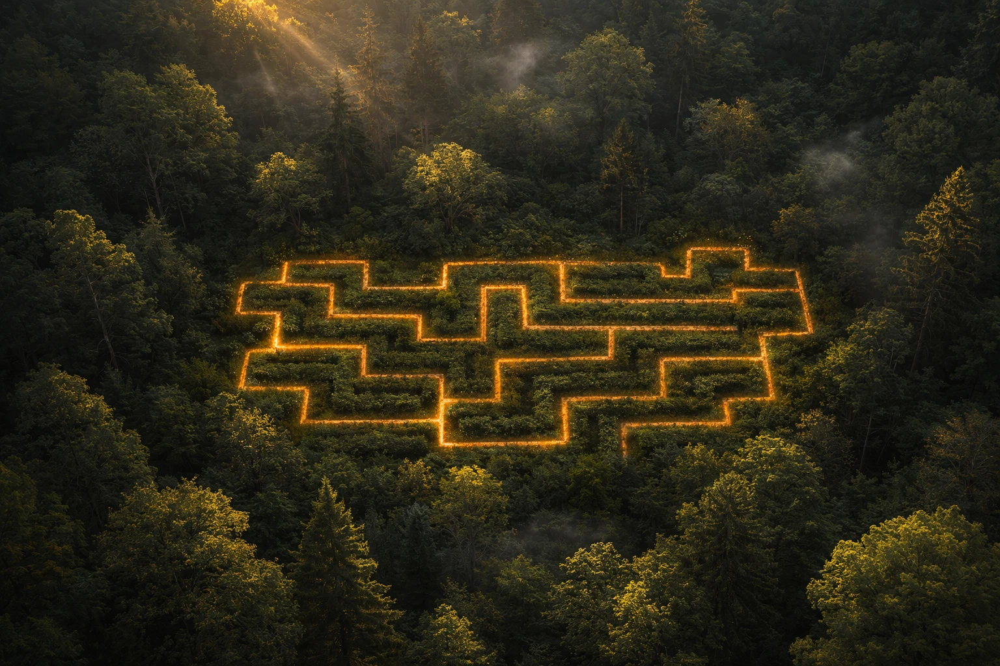
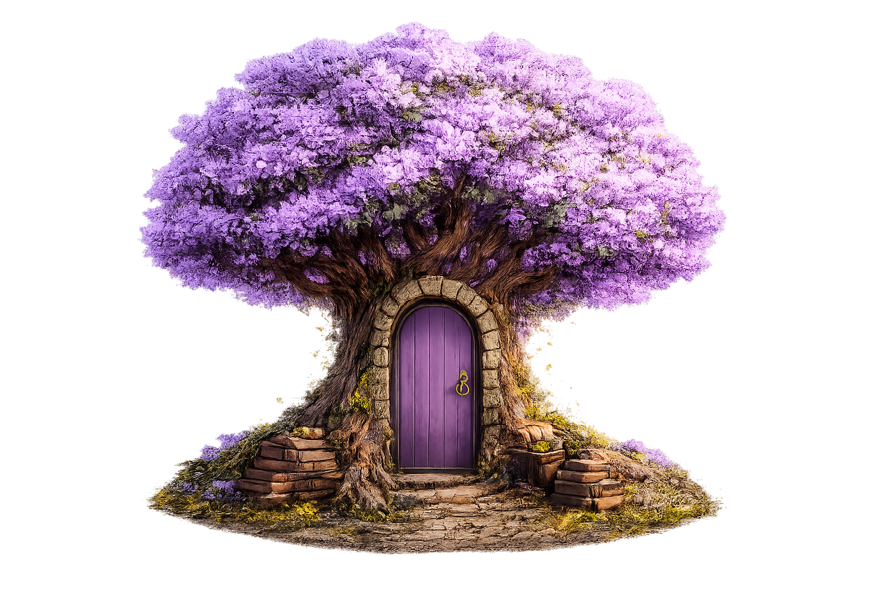
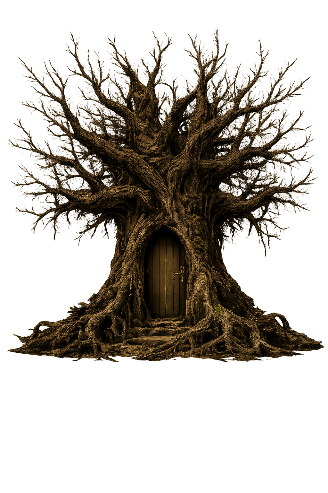
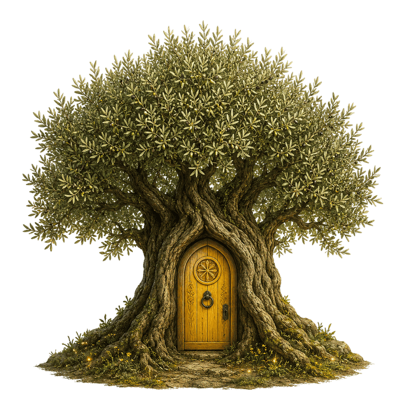

📱
よこにしてね！
めいろをあそぶには
スマホをよこむきにしてください
NOT FINISHED YET
You didn’t finish your warm-up.
ウォームアップが まだ おわっていないよ。
Hey, PLAYER.
もどって、さきに おわらせよう。
Go back and finish, or continue anyway.
もどって おわらせよう。
TODAY’S DAILY CHECKNOT DONE
0 / 3 BLITZ GAMESNOT STARTED
WORDS
SENTENCES
QUESTIONS

今週のブーハー
GAMES
A NEW FRIEND HAS ARRIVED新しい 友だちが 来たよ
You Unlocked Batty Booha!バッティー・ブーハーを 解放したよ！
Tap Batty Booha to equip your new traveling friend.バッティー・ブーハーを タップして、あたらしい おともだちを 身につけよう。

しゅくだい
しゅくだいの木に
はいりますか？
Homework Tree へ いきますか？

カラスキー
カラスキーの木に
はいりますか？
ほんとうに はいりますか？

えいごじゅく